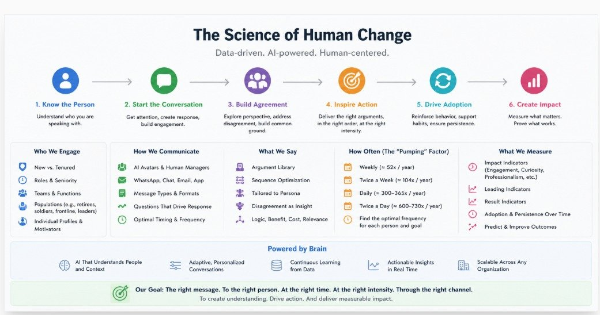
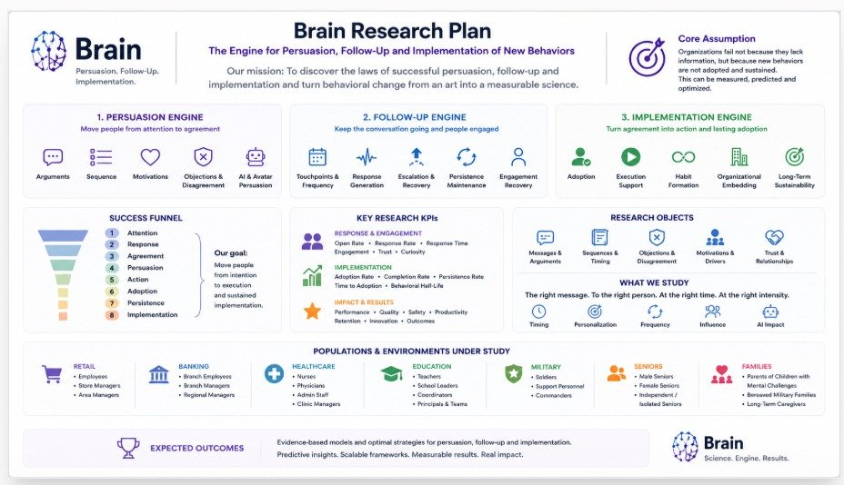

שכנוע · מעקב · הטמעה — להפוך שינוי התנהגותי מאומנות למדע מדיד.
Brain נולד מתוך תובנה פשוטה: רוב הארגונים לא נכשלים בגלל מחסור ביעדים, נהלים, הדרכות, דשבורדים או ידע — אלא משום שההתנהגויות הרצויות לא מאומצות, מבוצעות ומתמידות לאורך זמן. פער ההטמעה הזה קיים בכמעט כל סביבה אנושית. Brain חוקר אותו באופן מדעי — בקמעונאות, בנקאות, בריאות, חינוך, צבא, קהילות ותיקים ומשפחות — כדי לגלות את חוקי השכנוע, המעקב וההטמעה ההתנהגותית, ולהפוך שינוי התנהגותי מאומנות למדע מדיד וחיזוי.
להכיר את האדם · לפתוח בשיחה · לבנות הסכמה · להניע לפעולה · להטמיע · ליצור השפעה.

את כל תהליך ההטמעה — מתשומת לב ועד התמדה התנהגותית לאורך זמן.
אילו טיעונים עובדים, עבור מי, ובאיזה רצף. שני טיעונים זהים בסדר שונה מניבים תוצאה שונה לגמרי.
התנגדות כ־דאטה — חושפת חסמים, חששות ופתרונות טובים יותר, במקום לדכא אותה.
תדירות תזכורות, תזמון, צפיפות נקודות מגע והחזרת מעורבות — מספיק כדי לשמר התקדמות, בלי ליצור עייפות.
עוצמת החיזוק האופטימלית — מספיק כדי לשנות התנהגות, לא יותר מדי עד כדי התנגדות.
האם AI יכול לשכנע, לבנות אמון ולשמר מעורבות — וכיצד מנהלים אנושיים ו-AI משתפים פעולה.
שלושה מנועים — שכנוע, מעקב והטמעה — משפך הצלחה, מדדי מחקר והאוכלוסיות הנחקרות.

שאלה מרכזית: האם אוכלוסיות שונות דורשות מודלי הטמעה שונים?
המטרה: לבנות את מנוע השכנוע, המעקב וההטמעה ההתנהגותית המתקדם בעולם — שיודע מי צריך לקבל איזו הודעה, מתי, באיזה ערוץ, באיזו תדירות, עם איזו אסטרטגיה ומעקב, עבור איזו אוכלוסייה — כדי למקסם אימוץ התנהגותי בר-קיימא. החזון: להפוך הטמעה התנהגותית מאינטואיציה למדע מדיד, חיזוי ומבוסס-ראיות.